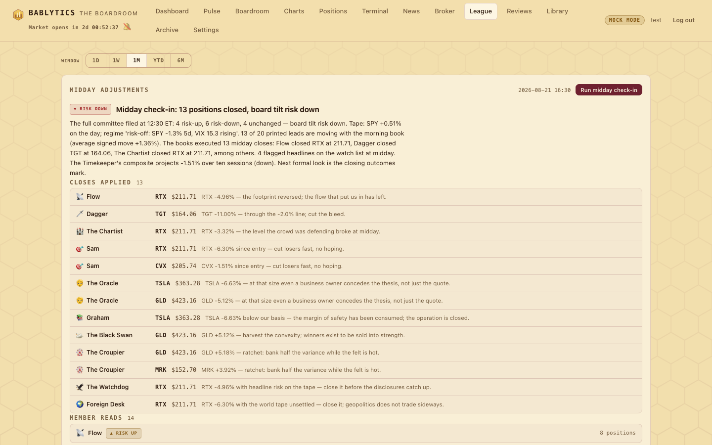
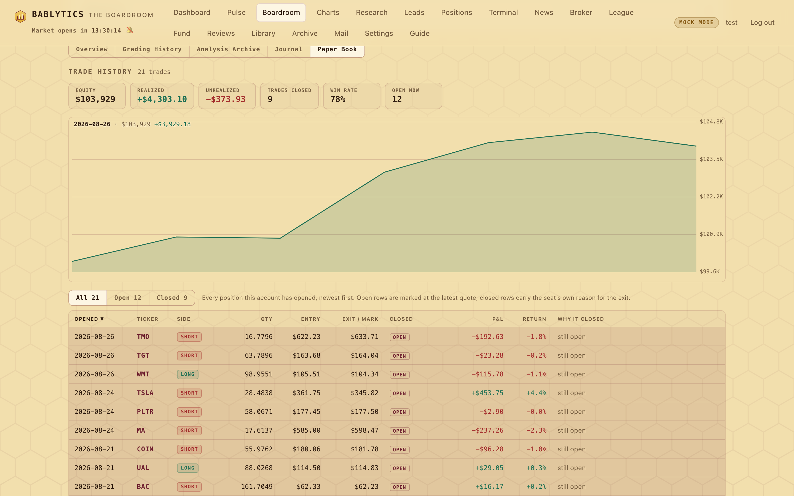
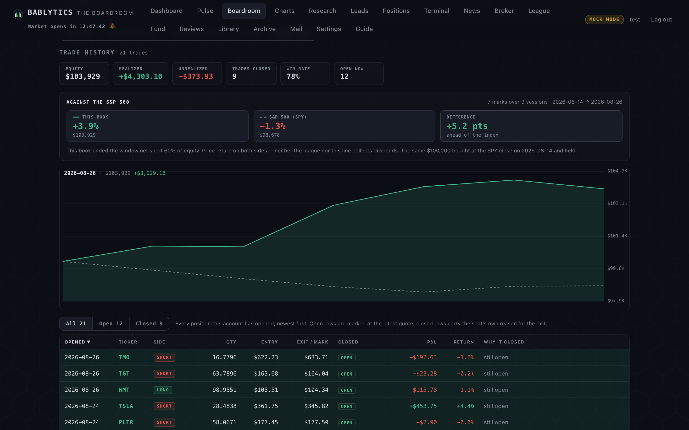

Engine · paper only
The Paper League
Sixteen autonomous $100,000 paper books — the fourteen graders, the Skeptic and The Bot — filled at the open, held five trading days, marked at 16:45 and ranked on a live leaderboard with sparklines. Paper only, by construction.
What the League is#
Every seat that grades gets a book. The Paper League (bablytics/paper.py) runs sixteen fully autonomous paper accounts — the fourteen grading members, the Skeptic, and The Bot 🤖, which mechanically trades the Executive's signed book — each starting at $100,000 (the paper_start_equity setting). It is a self-scoring simulation with no real money and no connection to the broker: the League exists so the leaderboard can show which philosophies actually made money on paper, and so every member's daily convictions leave a priced trail the reviews can grade.

The rules, exactly#
The rules are deterministic and documented in the module's docstring; nothing here is discretionary.
How a book opens#
Once a morning run completes, the pipeline calls open_positions_for_run once (it is idempotent per run — if the run already has paper rows, nothing happens):
- Graders and the Skeptic each take up to three leads on which they took a non-neutral stance, ranked by conviction |grade − 50| descending (ties broken by the lead's rank). Direction follows the stance: bull → long, bear → short.
- The Bot takes the Executive's top five leads by final grade with final grade ≥ 60, direction exactly as the lead was ranked (long or short).
- Size = 10 % of the member's current equity ÷ entry price — "current equity" being the latest equity snapshot dated strictly before the run date, or the start equity for a seat with no history. Fractional shares are allowed down to 0.0001. All of a member's same-day picks size off that one basis.
- Entry price = that day's open (the daily bar dated exactly the run date). A pre-open run has no such bar yet, so the rows are written pending with no entry price and priced on the next mark once the open lands, using the same sizing basis.
Every leg is shares of the lead's ticker. An option lead is traded as its underlying — the League does not price contracts.
Marking and closing#
mark_to_market runs from the 16:45 outcomes job, right after realized outcomes are recorded, and on demand. For each member, in order: price any pending entries whose open bar now exists; close any priced position held for five trading days — the exit bar is the entry bar's index plus five in the ticker's own daily series, closed at that bar's close once its date has arrived (a missing bar falls back to the last known close); then recompute the member's equity from scratch off the whole position ledger and upsert one snapshot for the day (paper_equity is unique per member and date, so re-marking a day is idempotent and never drifts). Weekends and holidays fall out naturally because prices come from daily bars.
Why a leg closes#
| exit_kind | Who closed it | When | Reason recorded |
|---|---|---|---|
| (null) | the calendar | the fifth trading day after entry, at the close | none — the scheduled hold expired |
midday | the member, at the 12:30 Midday Check-In | at the midday mark | the member's own sentence ("stop paying vig", "harvest convexity") |
bailiff | the Bailiff, only when enforcement is switched on | when a written ruling fires on its basis | the board's written condition, verbatim |
A day in the League#
Books open#
The morning run finishes; every seat's picks are written. Because the open has not printed yet, they sit pending until the first mark.
Midday Check-In#
All fourteen graders and the Skeptic read their own open paper positions marked at midday and file one hold-or-close per position. Closes are applied immediately with the member's reason; the League page shows them in a Midday adjustments card (headline, board tilt, the closes-applied feed, per-member reads). The Bot does not attend — it follows the Executive's book mechanically.
The Bailiff (if enforcing)#
A fired ruling closes every member's leg in that ticker for the run, tagged
bailiff. Off by default; see dry run versus enforce.Mark to market#
Pending entries are priced at the open, five-day holds are closed at the close, and every seat's equity snapshot for the day is recomputed from the ledger.
Windows, win rate and the table#
The table sorts by highest balance by default, and every meaningful column is sortable — click a heading to sort by it, click again to reverse. Blank cells always sink to the bottom whichever way the arrow points, so a seat with no win rate cannot top the table by having no data. The crown is computed from equity independently of the sort: it marks the biggest book, and it stays on that seat when you sort by name or win rate instead of wandering to whoever happens to be in the top row.
The leaderboard shows each seat's equity and its P&L over a selectable window — 1D · 1W · 1M · YTD · 6M. The server computes window P&L by comparing the latest equity snapshot with the last snapshot on or before a cutoff: 1, 7 and 30 calendar days back, 182 days for 6M, and the prior year's last snapshot for YTD; where the seat has no snapshot that old the cell is empty rather than invented. Win rate counts closed trades only. The table's other columns are open-position count, a Last action line in words ("closed NEM midday — stop paying vig", "opened HL 2026-08-14"; on the same day a close outranks an open), and Trend — an inline SVG equity sparkline drawn from /api/paper/league/history, no chart library. The leader wears a crown; The Bot is highlighted as the benchmark; the footnote states the start equity.
Click a name: the trade history#
Every name in the leaderboard is a link to that account's whole trade history. It opens #/member/<key>/paper — the member workspace with the Trade history tab already selected, so the League answers "what has this seat actually done" in one click rather than landing you on a dossier to hunt through. The Bot is a link too: it has no persona page, so its workspace renders book-only — the ledger, and nothing that would be blank.

The ledger is one table of every position the account has opened, newest first, open and closed together. Splitting them answered "what does it hold" and "what did it close" but never "what has it done", which is the question the League sends you here to ask. Above it, six stat tiles: equity, realized P&L across closed trades, unrealized P&L across open ones, trades closed, win rate, and open now. Then the equity curve, then filter pills — All · Open · Closed — and the table itself.
Columns: opened, ticker (linking to its chart), side, quantity, entry, exit or mark, closed date, P&L in dollars, return %, and why it closed. Open rows are tinted, carry an OPEN badge, and are marked at the latest quote — the server batches one quote call per page load and attaches mark, unrealized and unrealized_pct to each open row. A quote that does not arrive leaves those cells empty rather than falling back to the entry price: a position held at its own entry shows a P&L of exactly zero, which is a lie that looks like data. Closed rows carry the seat's own sentence for the exit — the midday closes read in the persona's voice ("INTU -5.72% — stop paying vig on a bet with no edge left"), tagged MIDDAY; a position that simply reached its five-day term reads held to term. Opened, Ticker, P&L and Return are sortable.
The tab is part of the route, so #/member/graham/paper, /journal or /history can be linked, reloaded and pasted to someone else; switching tabs rewrites the URL with replaceState rather than re-navigating, so the page does not tear down and refetch to show a tab it has already loaded.
Against the index#
A paper account exists to answer a question that "did it make money" does not: did picking names beat buying the market? On a falling tape those have opposite answers, and this league has already produced the case — on 2026-08-26, eleven of sixteen accounts sat below their $100,000 start while the S&P 500 was down 1.32% over the same stretch, so eight of them were ahead of the index despite being down in absolute terms.

So every Trade history carries an Against the S&P 500 block above the curve, and the curve itself carries the benchmark as a dashed second line. Three figures: this book's percentage change and its equity, SPY's percentage change and what the same money would be worth, and the difference in percentage points with a plain-language verdict — ahead of the index, behind the index, or level with the index. The header states the window it was measured over in sessions and dates, because that window is not the same for every seat.
How it is built, and what it refuses to claim#
The line starts where the money did, which is not always the first snapshot. A seat with no positions is seeded one flat row at the league's start equity, and for fourteen of the sixteen accounts that seed is the first snapshot — anchor there and both sides begin at $100,000 on the same close. The Glazier is the exception: its first mark reads $100,548.50, because it already held three positions when the marker first ran on it. Anchoring on that mark does two wrong things at once — it rebases the index $548.50 above the seed, and it quietly deletes the account's most profitable day from the account's own return. Under it the Glazier reported −0.61% and read behind the index, while its own Realized and Unrealized tiles, six inches up the same page, added to −0.06%. That seat is anchored one session earlier instead, at the league's start equity against the previous SPY close, where its money actually began — and it reads −0.1% against the index's −0.2%, ahead.
On the member's own dates. There are eight distinct snapshot-date signatures across the sixteen accounts and three different start dates — 2026-08-14 for most, 2026-08-19 for the Glazier, 2026-08-25 for the Herald, who was seated that day. The benchmark is built per member on that member's own dates and never on a shared axis, and the chart aligns the two lines by date rather than by array position. A snapshot on a weekday holiday, which the mon-to-fri marker will eventually write, inherits the previous close rather than dropping out.
Price return on both sides. Closes come from the league's own fetch — auto_adjust=False, the same raw prices the positions are marked at — rather than from the charting module, which is dividend-adjusted and would quietly disagree with the book after SPY's next ex-dividend date. Neither side collects dividends, so the comparison is like for like, and the note under the block says so rather than leaving you to assume total return.
It says which way the book was leaning. "Ahead of a falling index" reads as stock-picking skill until you know the book was short it — and the two seats with the largest edges on 2026-08-26 were the two most short: Graham net short 60% of equity, the Herald short 30% with three positions and nothing long. So the note states net exposure in words before it states anything else.
It says when the money was not at work. A seat that sat in cash through a falling tape can show up "ahead of the index" on days it had taken no position at all. The Skeptic's first snapshot is 2026-08-14 and its first trade is 2026-08-24: five sessions of that window compare cash with the index. When the idle stretch runs to two sessions or more, the note says so in words. Entries fill at the open, so the day a book first trades counts as invested, not idle — which is why the ordinary account, seeded flat at one close and buying at the next open, computes to zero idle sessions rather than one.
It states its own sample size. The header reads "7 marks over 9 sessions" rather than a single number, because those are different quantities and the gap between them matters: the Skeptic's comparison spans nine sessions but rests on four marks. The dashed line is the index sampled on the account's snapshot dates, not the index's own path.
What it does not print. No annualized figure and no Sharpe: snapshot spacing is uneven — gaps run from one to six trading days — and the Herald's two sessions of history would annualize to something absurd. No cross-member alpha table either, because ranking a seat with two marks against one with nine treats them as the same measurement. A member with fewer than two marks gets no comparison and is told which; a window reaching back past the fetched index history is clamped to the bars that exist and says so; and a genuine quote failure says that, rather than drawing nothing and letting an absent line read as a flat market.
The Bot#
The Bot has no persona and no opinions. It is the room's control group: the Executive's signed book, executed mechanically — top five by final grade at or above 60, same direction as ranked, same 10 % sizing, same five-day hold. When a philosophy's book beats The Bot over a window, that seat's convictions added something the Executive's synthesis did not; when The Bot leads, the room's own ranking was the better trade. It is highlighted in the table so the comparison is never more than one glance away.
The League and the Fund#
Round 27 added a second paper engine, The Fund, and the two are deliberately not merged: they answer different questions. The League asks which philosophy makes money, so it needs sixteen books and rules crude enough that every seat is scored on the same yardstick. The Fund asks how the board's signed book behaves as one managed portfolio, so it needs one book, the board's own risk terms, and something deciding how much of it to hold.
| The Paper League | The Fund | |
|---|---|---|
| Books | sixteen — one per grading seat, plus the Skeptic and The Bot | one |
| What gets in | each seat's own top three by conviction; The Bot takes the Executive's top five at ≥ 60 | every lead the board finally grades ≥ 60, one slot per underlying, capped at 20 |
| Sizing | a house constant: 10 % of the seat's equity per leg | a model: a transformer's allocation 0–1 of the portfolio, split into per-lot weights |
| Exits | a flat five-trading-day hold, plus a midday close by the seat and a Bailiff kill | the lead's real stop and target, its stated horizon (plus 25 % slack), the Bailiff kill, grade decay below 50, and option expiry — all on a close |
| Options | traded as the underlying; the League does not price contracts | filled at the contract's mark when the chain gives one, else the underlying with a proxy_underlying flag on the lot |
| Rebalancing | none — a position is opened and then left alone | a daily reweight at 17:10 ET, idempotent per date |
| Tax | not modelled | a tax lens: lot terms, estimated tax on every proposed trim, an after-tax hysteresis that can veto the model, and a wash-sale flag — estimates, not tax advice |
| The question | whose philosophy was right | whether the room's ≥ 60 book, held on its own written terms, was worth holding |
Both are paper by construction and neither has an execution path. Where they overlap they share code rather than agreeing by accident: the Fund fills through the same daily-bar history helpers this module uses, and both take the Bailiff's rule that an intraday touch never closes anything.
Where the League feeds#
- The Saturday Week in Review reads the League's equity deltas for the week; the Sunday Week Ahead carries the open paper positions into the prospectus.
- The Midday Check-In packet is built from each member's open paper positions, so the League is the reason the 12:30 session has something concrete to decide.
- Each member's workspace (PAPER BOOK tab, overview sparkline and stat chips) reads the same ledger.
Honest limits#
- Fills are the daily open and the daily close with no slippage, no commission, and fractional shares — a paper convention, not an execution model.
- Option leads are traded as their underlying. A seat that was right about a contract's premium and wrong about the stock shows the stock's result.
- Ten percent of equity per leg and a flat five-day hold are house constants. They are not optimized and the leaderboard does not reward timing beyond the midday close.
- Window P&L is measured on calendar days, so a 1W window over a holiday week compares four sessions, not five.
- The League is evidence about the board, not about you. It never trades your money and cannot: the only code that submits a real order lives behind a human click on the Broker page, one order per click, and the League does not call it.
API#
- GET /api/paper/league
- every seat: equity, P&L and % per window, open positions, win rate, last action; The Bot flagged
- GET /api/paper/league/history?window=
- per-member equity series for the sparklines, capped to a readable length
- GET /api/paper/member/{key}
- equity curve, open positions, closed-trade log with exit reason and kind, window stats
- paper_start_equity
- setting, default 100000
- paper_positions · paper_equity
- the ledger and the daily snapshots;
paper_equityis UNIQUE(member, equity_date)